| 日付 | 2012年3月18日（日） |
|---|---|
| 山域 | 駿河 |
| メンバー | 家族（妻、長女・1歳） |
| 山行形態 | 子連れ日帰り |
| アクセス | 車 |
| ルート (Map) | 身延山登山口→感井坊→身延山→大光坊→身延山登山口 |
身延山は信仰の山である。
山梨県の西方にある低山で、特に目立つ山でもないのだが、
ここは日蓮宗の総本山として名高い。
山頂まではロープウェイが通じ半ば観光地となっているが、
一度は登っておきたい山だ。
ここ最近、週末の度に天気が悪くなっているが、
西の方は少しの晴れ間が出そうだったので、
この機会に登ってみることにする。
身延山に続く道は土産物屋が軒を連ねている。
天気が悪いためか人影は少ないが、なかなかの観光地のようだ。
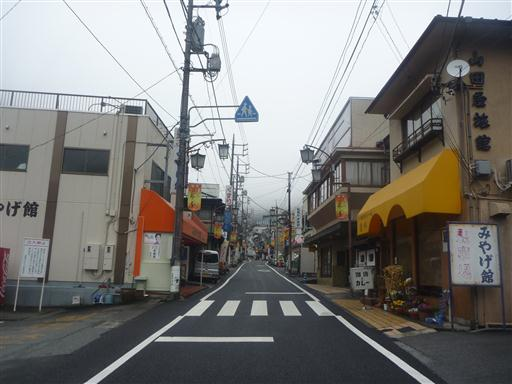
8:52 無料の駐車場があったので車を停めて歩き始める。標高275m。
ガイドブックによると表参道は車道のような広い道が山頂近くまで続くらしいので、
裏参道を登って表参道を下ることにする。
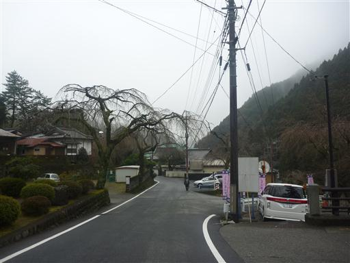
日蓮宗の開祖・日蓮の廟。
観光客か信者かは分からないが、お参りしている人がいる。
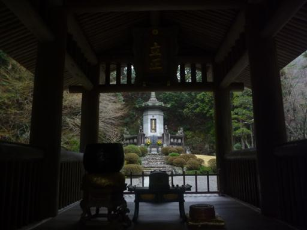
この辺りは雨が多いのか、苔がよく育っている。
今日も辺り一面霧に覆われていて湿度は高そうだ。
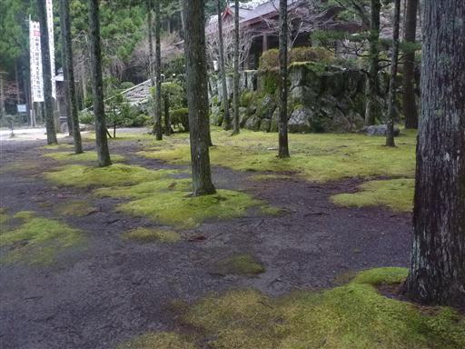
車道から離れて階段を登っていく。登った先に妙石坊という宿坊がある。
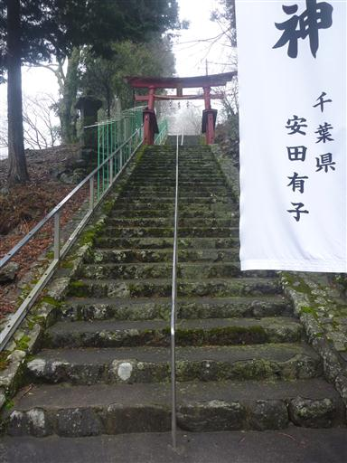
妙石坊の裏から登山道が始まる。
信仰の山だけあって巨大な杉が所々で見られる。

何度か林道を横切ると松樹庵に到着する。
辺り一帯、雲に覆われて視界は全くない。
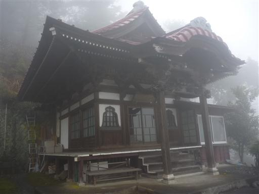
表参道は車道のような広い道とガイドブックに記載されているが、裏参道も同じような感じだ。
傾斜のあまりない、整備された広い道を歩いていく。
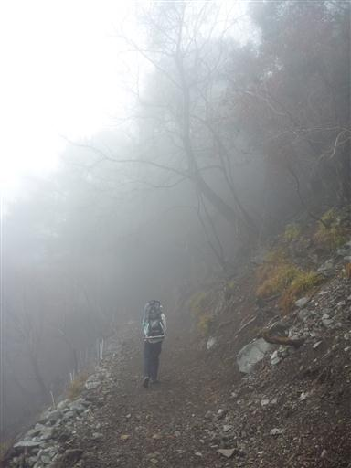
杉の巨木の切り株がいくつか残っている。下の寺院の建設に使われたのだろうか？
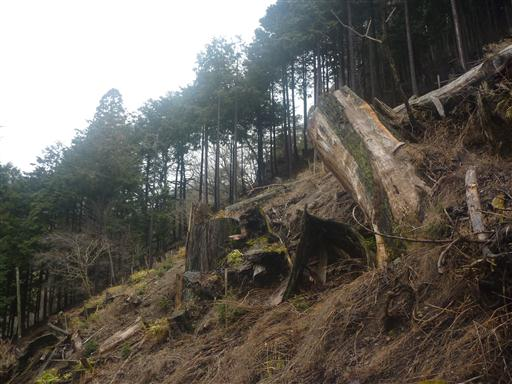
林道脇に突然、流し台が現れる。誰が何のために使うのだろう？
登山道には所々、使われることのなさそうなベンチが点在している。
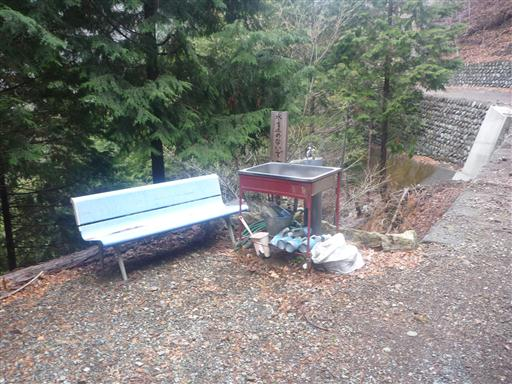
低い雲の上に出てきて、視界が少し広がる。下界は雲海が広がっている。
残念ながら上空も暗い雲が立ち込めている。
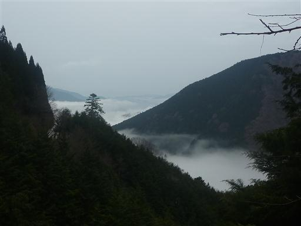
千本杉に到着する。この登山道のハイライトだ。
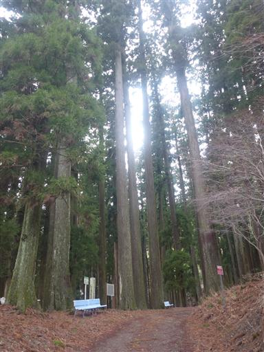
大きな杉が辺り一帯に聳えている。ここは山梨の森林100選に選ばれている。
解説板によると、造林学者に東洋一の美林と称賛されたとか。
ちなみに杉の本数は200本余りで、千本には満たないようだ。
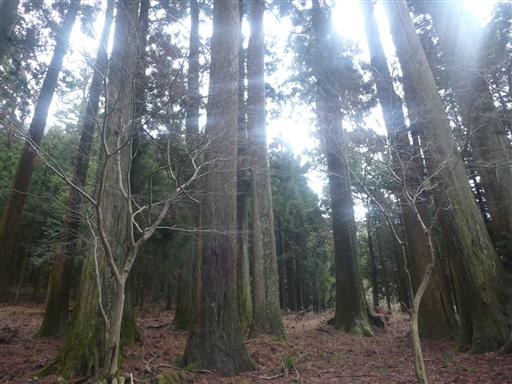
少し離れた場所から千本杉を振り返って見る。あの辺りだけ木の高さが高い。
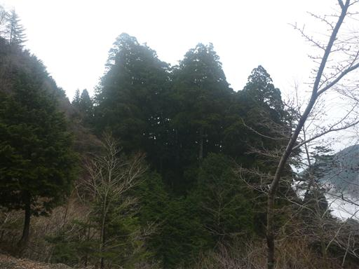
林道のような広い登山道は、途中から舗装されていて本当に林道になってしまう。
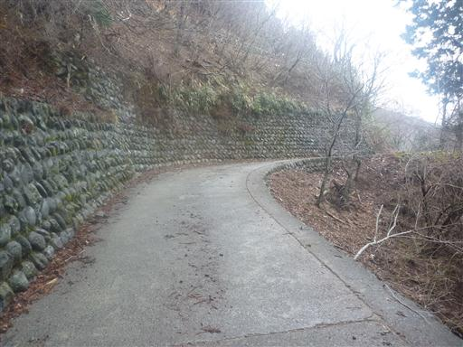
稜線に到着。ここで七面山方面からの登山道と合流する。
七面山も信仰の山で敬慎院という大きな宿坊がある。
2年ほど前に登ろうと計画を立てたが、雨で流れてしまった。
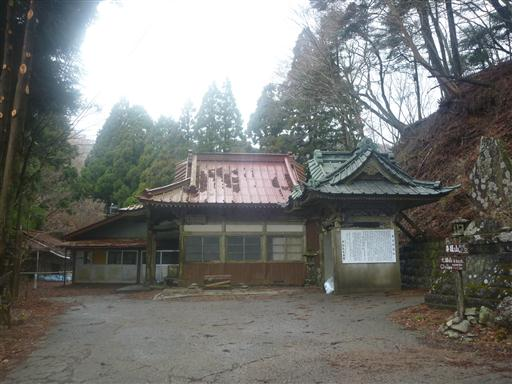
ここには感井坊という廃れた宿坊がある。
いつごろまで使われていたのか分からないが、建物も床も歪んでいて今にも崩れ落ちそうだ。
往時は賑わっていたのだろうか？
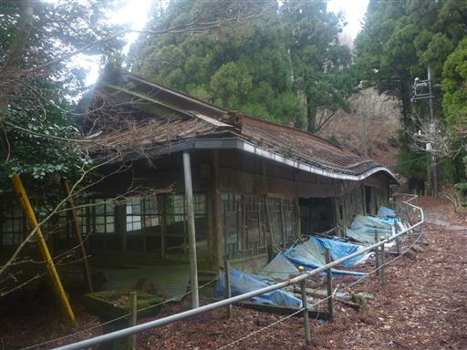
感井坊から身延山までの稜線歩きくらいは登山道らしい道が続くだろうと思っていたが、
ここも完全な車道になっている。
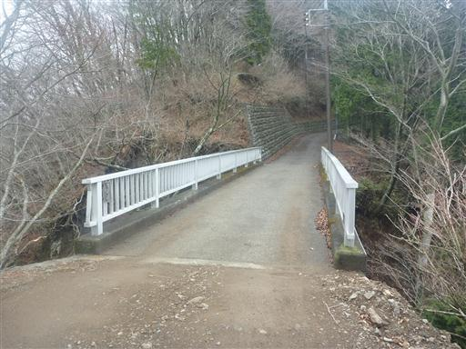
身延山直下のロープウェイ山頂駅に到着する。
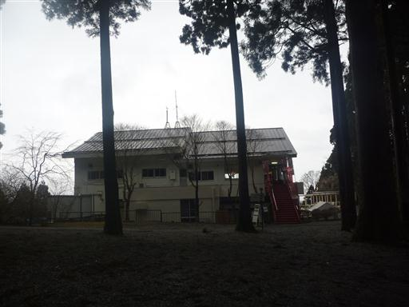
山頂部には奥之院思親閣が建っている。
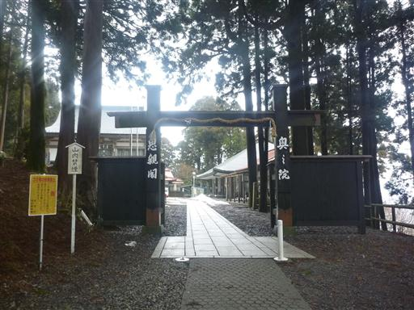
日蓮大聖人御手植杉と書かれている。
中腹にあった杉に負けず劣らず、立派な杉の大木だ。
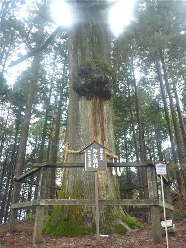
石段を登り、立派な門をくぐる。
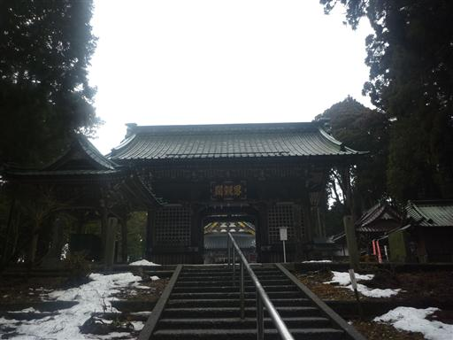
11:32 思親閣に到着する。標高1153m。
ここが身延山の山頂のようだ。
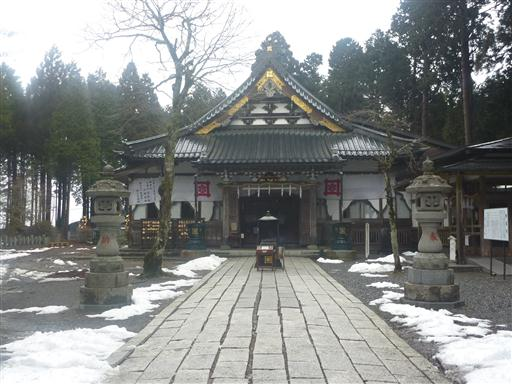
少し雨が降ってきたので、少し下ったところの休憩所で昼食をとる。
我々のために、わざわざ寺の人がストーブをつけてくれた。
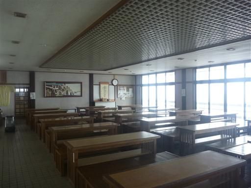
山頂付近に南アルプス展望台がある。
下界にあった雲が上がってきて辺りを覆い、視界は0になってしまっているが
片道3分なので行ってみることにする。
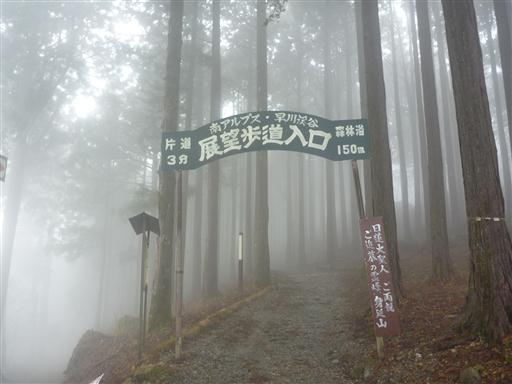
展望台に到着。思った通り何も見えない。
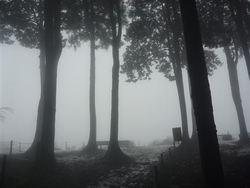
何とこんなところに山頂標識がある。
ここはこの山の最高地点ではなさそうだが、さすがに思親閣の隣に立てる訳には行かなかったのだろう。
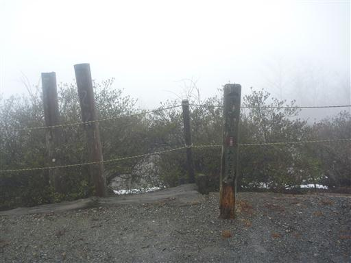
表参道から下山する。幸い雨は止んでいる。
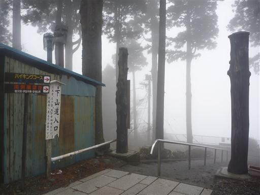
道端には丁目石が置かれている。山頂が50丁目のようだ。
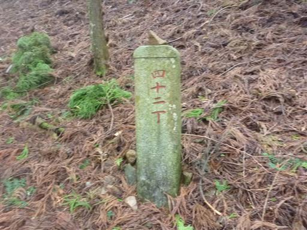
表参道でも所々で杉の巨木が見られる。
こちらの道も車道のようによく整備されている。
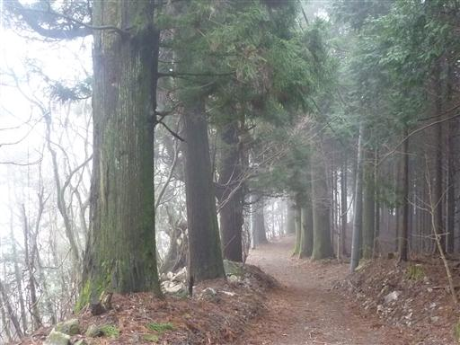
大光坊に到着する。まるで下界に下りてきたかのような風景だが、ここは山の中腹だ。
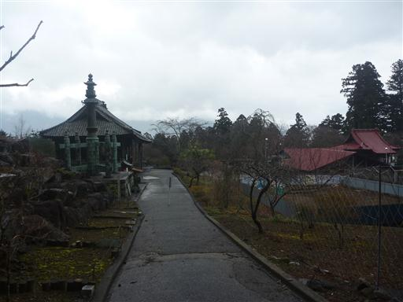
相輪塔。側の解説板には県指定有形文化財と記載されている。
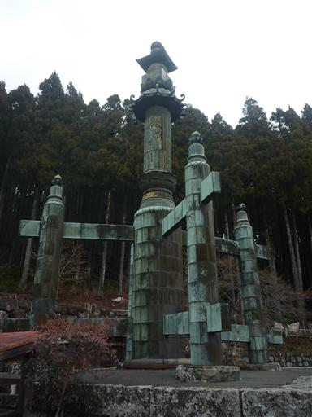
大光坊より下は舗装された道を下って行く。
登りも下りも足にやさしくない道だ。大して歩いていないはずだが足が非常に疲れる。
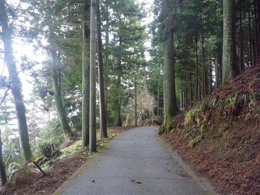
無縁仏の墓が並んでいる。
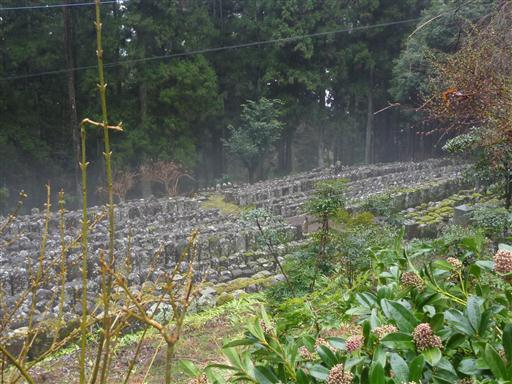
身延山久遠寺に到着する。ここは日蓮宗の総本山だ。
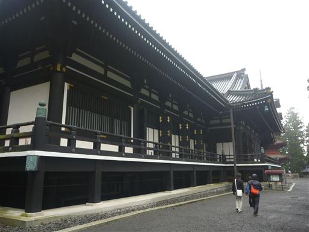
総本山というだけあって境内は広い。
この辺りの建物は1875年の火事ですべて燃えてしまったらしく、建物はみな新しい。
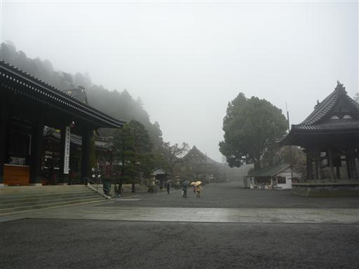
日光東照宮を思い出すような、凝った装飾が施されている。
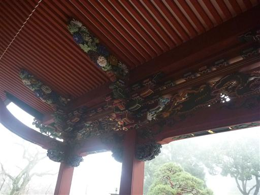
靴を脱いで堂内を歩いてみる。いくつもの建物が連なり、内部はかなり広い。
建物が新しいからか、京都や奈良の寺院とはどことなく雰囲気が異なる。
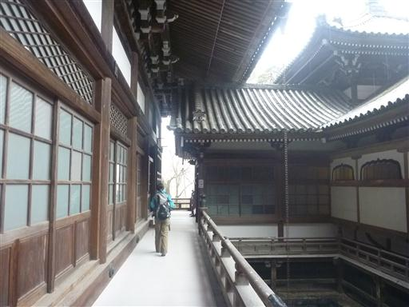
本堂を後にし、菩提悌と呼ばれる287段の石段を下る。
上から見ると怖いくらいの急傾斜の石段だ。
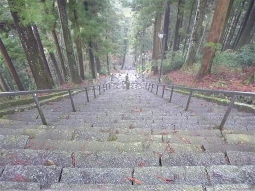
下りきったところで下から見上げる。
表参道から身延山に登る場合は、まずこの石段から登ることになる。
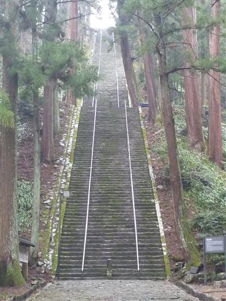
立派な三門を潜って外に出る。
15:03 駐車場到着。
やはりこの山は表参道から登って裏参道から下るべきだったと少々後悔。
面白味に欠ける登山道だったが、霊山の雰囲気を感じられる山旅だった。
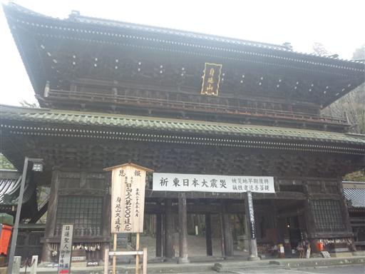